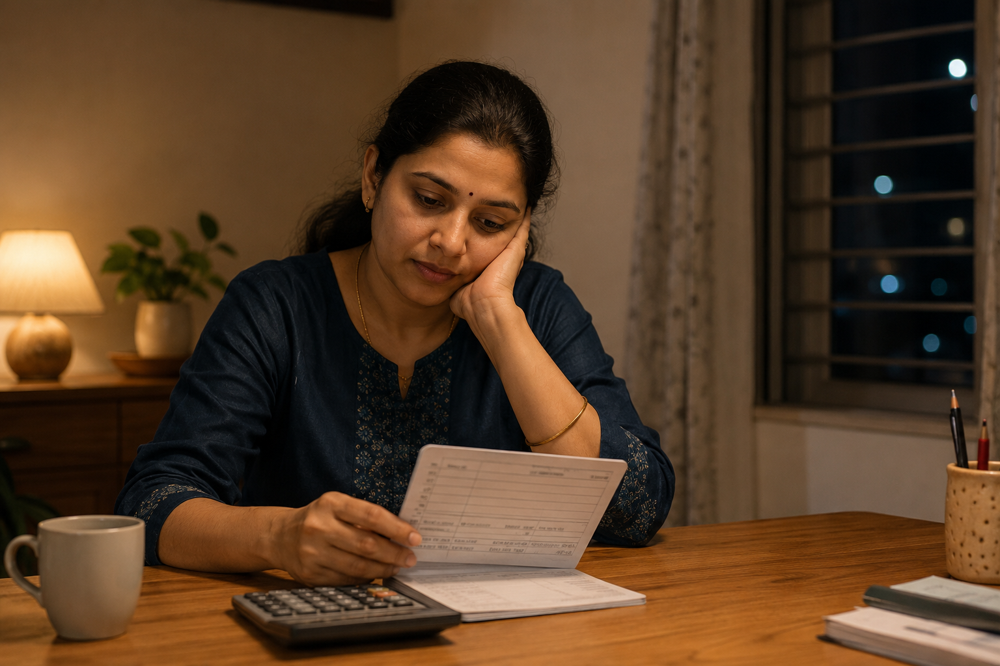
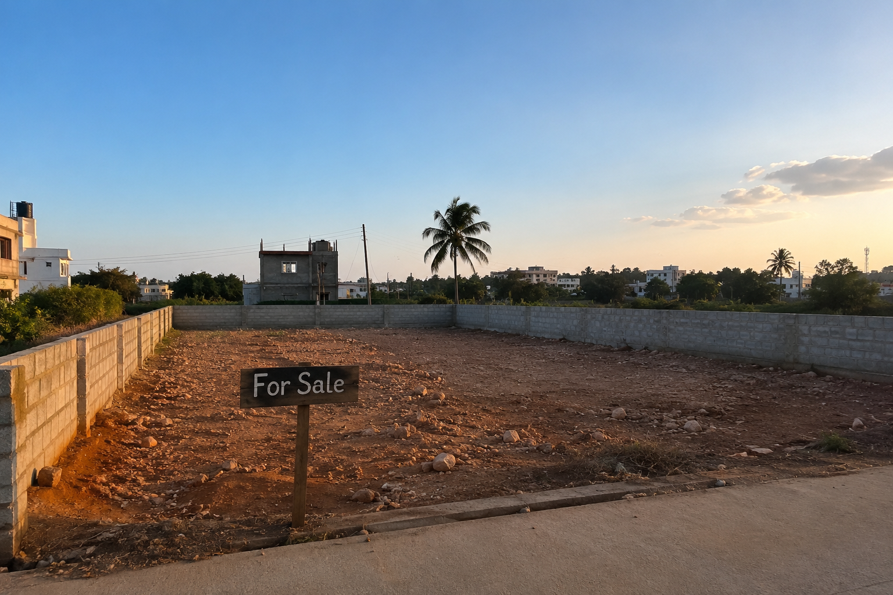
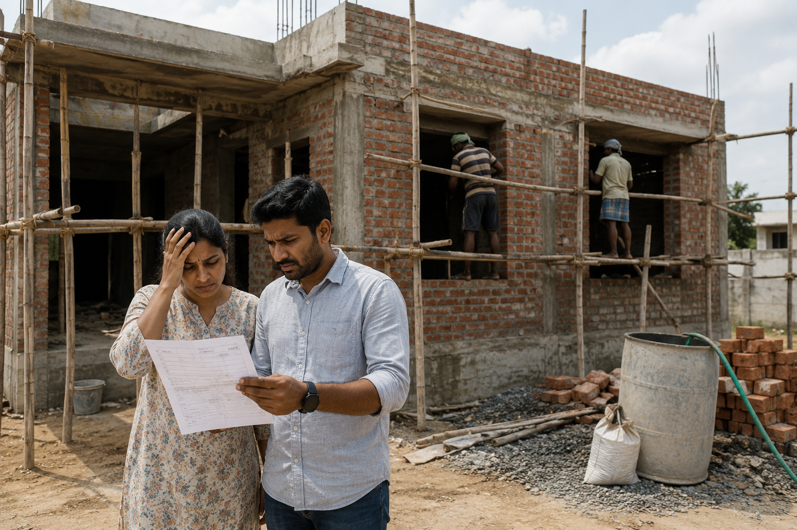
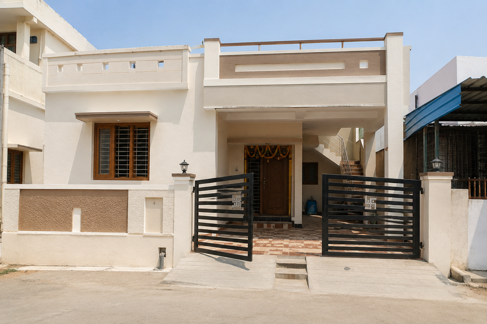
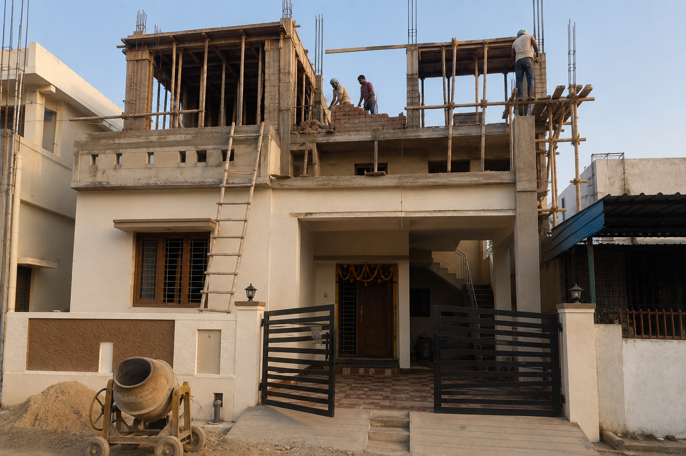
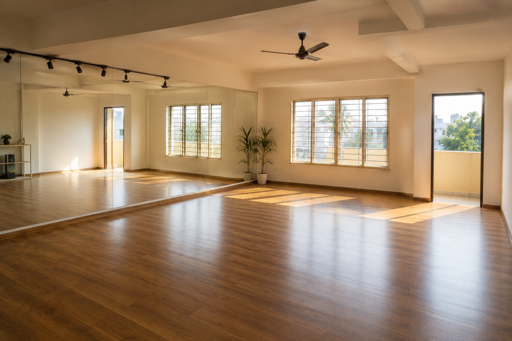
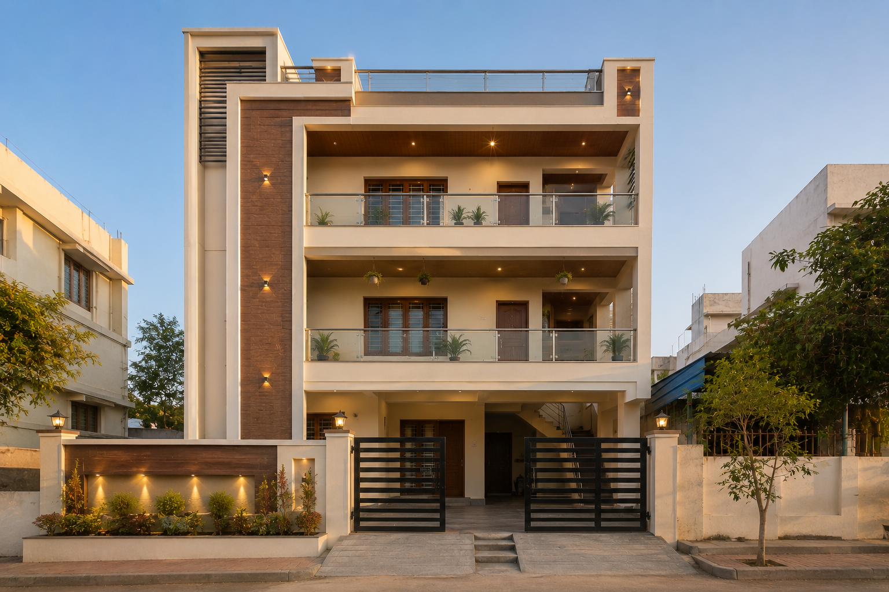
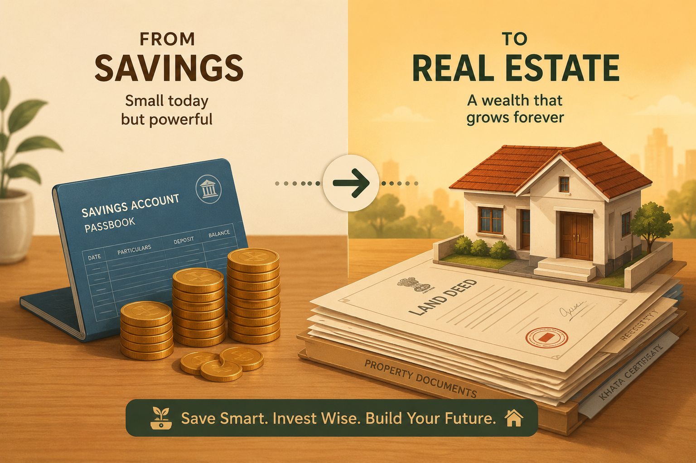

Everyone around her was talking mutual funds. SIPs. Compounding. "Become a crorepati in 15 years," the ads said. Ironically, she worked inside a mutual fund company — she saw the pitch decks, the projected charts, the glossy brochures every single day.
And yet, she didn't buy a single mutual fund for herself.
Instead, she did something almost boring: she saved. Quietly, without excitement, without a portfolio tracker app, without a financial influencer cheering her on — she built up ₹50 lakh sitting in a plain savings account. No market noise. No red-and-green candles keeping her up at night. Just discipline.
People might call that "inefficient." What happened next would prove it was anything but.

While the world debated index funds versus active funds, she made a different kind of bet — on a 1,500 sq ft plot of land in Hoskote, priced at ₹3,500 per square foot. It wasn't glamorous. It wasn't liquid. It didn't have a ticker symbol. It was just land, a boundary wall, and a registration paper.
A loan made it happen — not a reckless one, a calculated one, backed by the confidence that land, unlike sentiment, doesn't panic-sell.

Then came the part nobody puts in the success story reels: construction.
The ground floor was supposed to cost around ₹25 lakh. It cost ₹37 lakh instead. Every stage — cement, labor, "site supervision," material substitutions — came with a quiet premium, the kind that only reveals itself after the bill is paid, not before. It was a masterclass in how real estate wealth isn't just about the asset — it's about surviving the people between you and the asset.
The single biggest leak in a real estate return isn't the land price — it's an unsupervised construction budget. A ₹12 lakh overrun on one floor alone is a bigger loss than most people's entire annual SIP contribution.

They built through it anyway. A 2BHK and a parking space stood where a dance studio was once imagined — plans evolve when reality writes its own script. The loan was closed. The ground floor was theirs, fully owned, no EMI hanging over it.

A year of breathing room, and then ambition returned. This time, bigger: a first floor with another 2BHK, and a second floor built for purpose — a dance class and an office space, the vision from years ago finally finding its floor.
It needed capital. A fresh loan of ₹46 lakh, this time larger, this time deliberate. The EMIs are still running today — a live, ongoing bet, not a finished fairy tale.

That empty, mirrored, sunlit room on the second floor is the one part of this story that isn't about money at all — it's the plan she'd been carrying since before the plot was even bought.

Here's where the story turns from "interesting" to undeniable.
The land that was bought at ₹3,500 per sq ft is now valued at ₹6,000 per sq ft — and that's just the land, before counting three floors of livable, rentable, usable construction on top of it.
| Stage | Amount |
|---|---|
| Savings-account corpus, pre-purchase | ₹50 lakh |
| Land cost (1,500 sqft × ₹3,500/sqft) | ≈ ₹52.5 lakh |
| Ground floor construction (actual, incl. overrun) | ₹37 lakh |
| First loan (closed) | ₹25 lakh |
| Second loan for 1st & 2nd floor (ongoing EMI) | ₹46 lakh |
| Current estimated sale value of the property | ≈ ₹1.6 crore |
From ₹50 lakh in savings and a loan, to a ₹1.6 crore asset — not across 15 years of SIP discipline, but within a handful of years of decisions, mistakes, corrections, and construction dust.

This isn't a story that says "mutual funds are wrong." It's a story that says don't let one asset class monopolize your idea of wealth.
Real estate isn't liquid. It doesn't have a daily NAV. You can't redeem it in three clicks. But it has something SIPs rarely offer early on: leverage, tangibility, and the ability to actively add value through your own decisions — a floor at a time, a mistake at a time, a correction at a time.
A 10 lakh plot, bought with patience and held with intention, doesn't need 15 years to tell a story worth telling. Sometimes it needs three — but only if the construction phase is managed carefully, since that's where most of the silent losses happen.
The single most expensive mistake in this entire story wasn't the land — it was the ₹12 lakh construction overrun on just the ground floor. That's the part most families in Hoskote go through blind, floor after floor, without anyone watching the site, the material quality, or the billing on their behalf.
If you're planning a G, G+1, or G+2 construction in Hoskote, HoskoteConstruction helps you avoid exactly the kind of cost overruns and site-level cheating this story describes — with transparent quotes, quality material sourcing, and construction coordination so your ground floor budget stays a budget, not a surprise.
Get a Construction Quote at HoskoteConstruction.in →Real estate worked for this family — but it isn't the only path, and it isn't liquid the way a mutual fund portfolio is. If you already hold mutual funds and want to know whether your portfolio is actually well-built (overlapping funds, poor category mix, high expense ratios) rather than just growing, don't guess.
Upload your CAS statement to SalaryBit's MF Analyzer Bot and get a clear breakdown of your fund overlap, asset allocation, and portfolio health — no login, no advisor bias.
Try the MF Analyzer Bot →